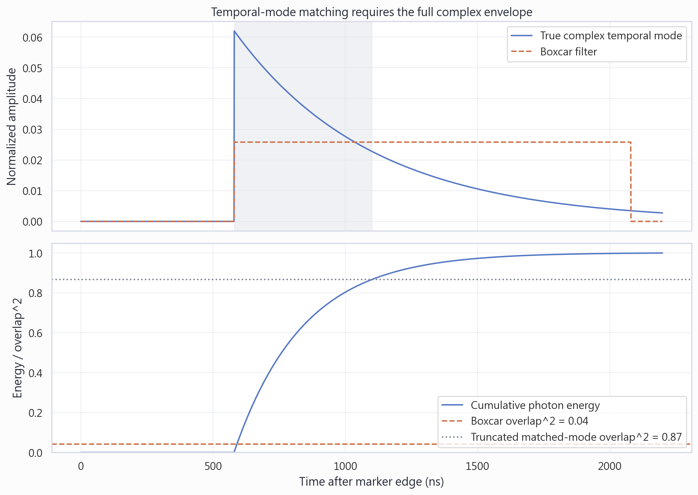
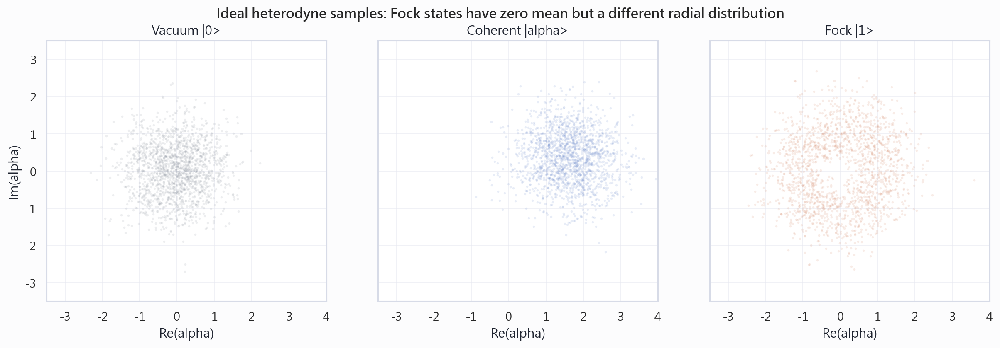
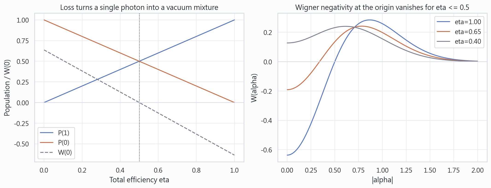
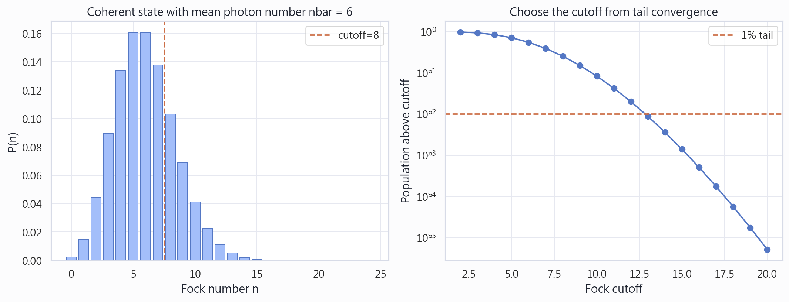

行進微波光子的 Heterodyne Tomography
從 continuous IQ trace 到 temporal mode、Fock-basis density matrix 與 Wigner function 的理論、計算與 QAWG 實作。
技術摘要
Tomography 的對象不是單一時間點，而是一個正規化的 complex temporal mode。 每個 shot 的 IQ trace 必須先投影成一個複數樣本，再用 reference calibration 與 heterodyne POVM 重建 density matrix。
Temporal-mode mismatch、傳輸損耗與有限 detection efficiency 都會把 Fock state 向 vacuum 混合。 對單光子而言，總效率 η 直接給出 P(1)=η、P(0)=1−η；η≤0.5 時原點 Wigner negativity 消失。
強 coherent pulse 只應用於 signal-path 與 mode calibration。 真正的 photon-state acquisition 必須另取資料，沿用同一 temporal mode，並在解讀 photon population 前校正 added noise、效率與 Fock cutoff。
完整 complex mode 比固定積分窗更可靠
Mode overlap 的平方就是 temporal-mode efficiency。只要 filter 在時間、decay constant 或 phase rotation 上不匹配，遺失的正交分量就表現為 loss。下圖的截短 window 即使使用正確 envelope，也只保留部分 photon energy。

Heterodyne IQ cloud 不等於 photon-number histogram
Ideal heterodyne measurement 取樣 Husimi-Q distribution。Coherent state 以平均位移表現；Fock state 的平均場為零，但 radial distribution 與 vacuum 不同。因此不能只比較平均 I/Q，也不能從單張 scatter 圖直接讀出 P(n)。

總效率決定單光子是否仍可見非古典性
理想 |1〉 經過 efficiency η 的 loss channel 後，density matrix 為 (1−η)|0〉〈0|+η|1〉〈1|。這個關係同時描述 propagation loss、temporal mismatch 與 detector inefficiency；但不同來源必須分開量測，才能知道該改善哪一段鏈路。

Fock cutoff 必須由 convergence 決定
Cutoff 太小會把真實 population 擠到最高幾個 bins，並可能在有限維 displacement/Wigner 計算中產生假 negativity。對強 coherent calibration pulse，尤其不能沿用為單光子設計的小 cutoff。

量測對象與時間定義
| 符號 / 變數 | 定義 | QAWG 對應 |
|---|---|---|
| aout(t) | 連續時間的輸出場 operator | 每個 shot 的 complex IQ trace |
| f(t) | ∫|f(t)|²dt=1 的 complex temporal mode | matched_mode |
| af | ∫f*(t)aout(t)dt | project_temporal_mode() |
| trigger delay | marker-relative integration 起點 | TOMO_MODE_START |
| acquire window | 保存的 marker-relative record 長度 | ACQUIRE_WINDOW |
| Fock cutoff | 保留 |0〉…|N−1〉 的 Hilbert-space 維度 | cutoff |
從 IQ trace 到 density matrix
1. 以獨立 coherent calibration 找 temporal mode
Fock state 本身有 〈a〉=0，因此不能用單光子 traces 的平均值找 envelope。應使用同一 emission path 的 coherent calibration、|0〉+|1〉 calibration，或 covariance/PCA。
2. 每個 shot 只投影一次
reference_samples = project_temporal_mode(
reference_iq,
matched_mode,
start_sample=mode_start_sample,
)
signal_samples = project_temporal_mode(
signal_iq,
matched_mode,
start_sample=mode_start_sample,
)不要先平均 traces 再做 tomography。Tomography 需要保留 shot-to-shot distribution。
3. Reference normalization
reference_alpha, (signal_alpha,), iq_offset, iq_scale = (
normalize_heterodyne_reference(reference_samples, signal_samples)
)這個 normalization 只有在 reference 可視為 measurement input 的 vacuum、且 added noise 已被正確納入 POVM 時，才是完整的 photon-unit calibration。
4. Maximum-likelihood reconstruction
rho = heterodyne_ml_density_matrix(
signal_alpha,
cutoff=10,
iterations=200,
dilution=0.5,
)QAWG 使用 diluted RρR iteration，維持 ρ≥0、ρ=ρ†、Trρ=1。重建應在多個 cutoff 下重複，並檢查低 photon bins、平均光子數與 tail population 是否收斂。
5. Wigner function 最後才算
只有在 temporal mode、efficiency/noise calibration、cutoff convergence 與統計誤差都通過後，Wigner negativity 才能當作非古典性的證據。
限制、失敗模式與檢查方式
最後 5% envelope 仍高於 peak 的 10% 時，增加 acquisition window 並重新 acquisition。
gain=1 calibration 中 signal mean-trace norm 應明顯大於 zero-gain reference。
reference variance normalization 不是 amplifier-noise deconvolution；需要 noise moments 或 calibrated noisy POVM。
最高兩個 Fock bins 超過約 1% 時，不解讀 photon number 或 Wigner negativity。
高階 moments 與弱 negativity 對 sampling error 敏感；使用 bootstrap 或重複 acquisition。
單一 matched filter 只重建其投影；檢查 covariance eigenvalue spectrum 與殘差 mode。
建議實驗順序
- 以 gain=1 coherent pulse 驗證 CHB、LO/IF、sequence ordering、ADC headroom 與完整 trace。
- 從獨立 calibration 建立 complex matched mode，固定 window 與 mode，不再用弱態資料調整。
- 取得 zero-gain reference 與真正 photon-state shots；兩者 timing、filter、gain chain 完全一致。
- 以多個 cutoff 重建 density matrix，先看 convergence，再看 Wigner。
- 加入 measurement efficiency、thermal occupancy、JPA/HEMT added-noise calibration 與 bootstrap uncertainty。
下一個需要回答的問題
- 目前 cavity photon release 的實際 envelope 是 exponential、shaped release，還是多 mode？
- JPA/HEMT chain 的 added-noise number 與總 efficiency 各是多少？
- 真正 photon-state sequence 如何與 coherent calibration 保持相同 emission path？
- 是否需要 joint qubit–field tomography，而不只是 field marginal state？
理論依據：Experimental Tomographic State Reconstruction of Itinerant Microwave Photons；Characterizing Quantum Microwave Radiation and Its Entanglement with Superconducting Qubits Using Linear Detectors。Simulation 由本 repository 的 docs/generate_tomography_tutorial.py 產生。